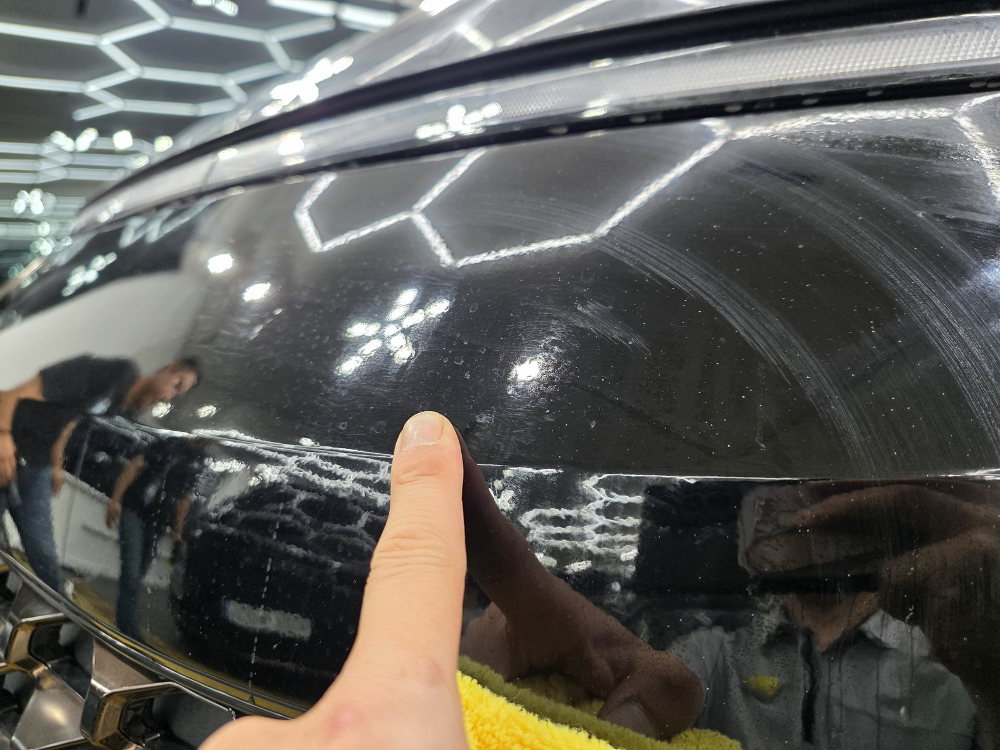
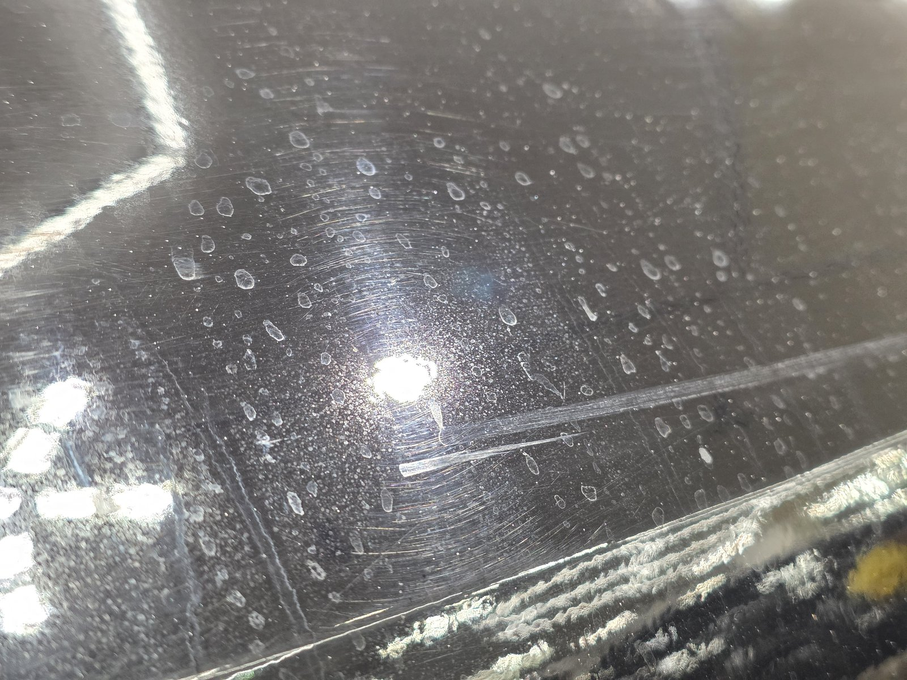
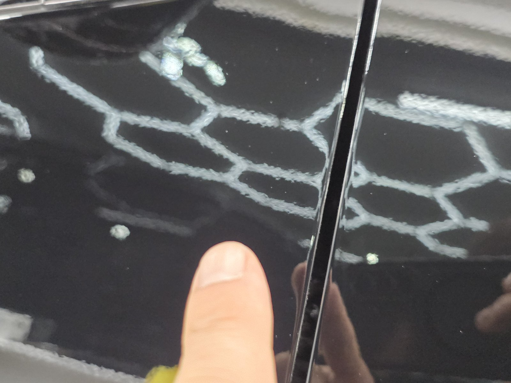
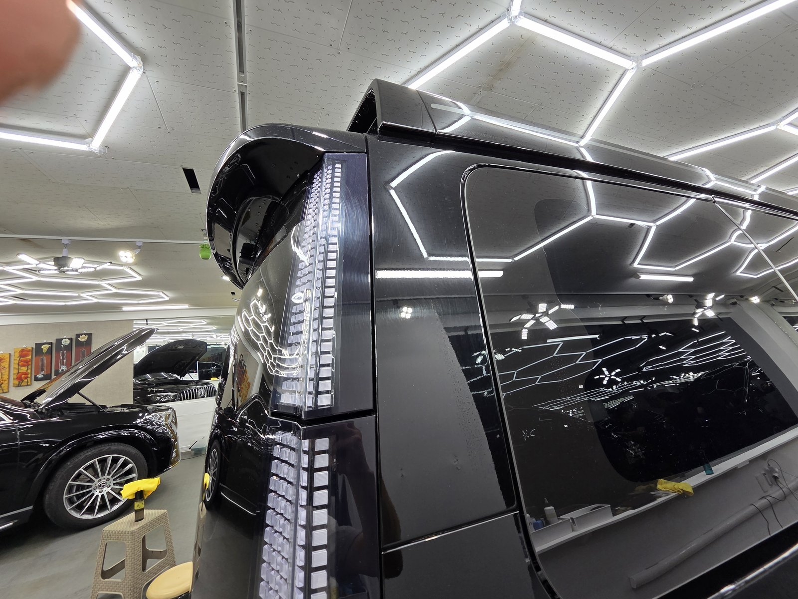
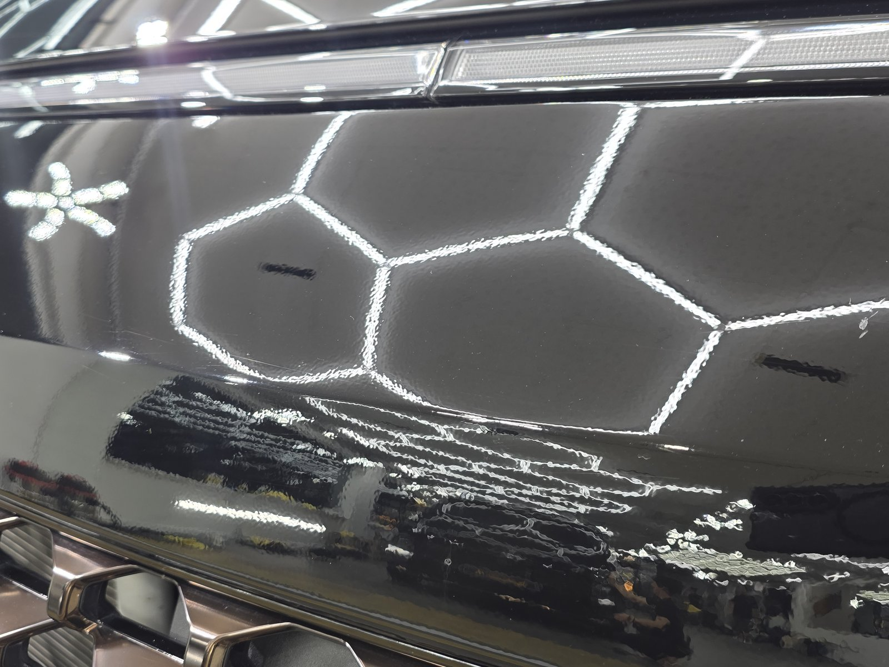
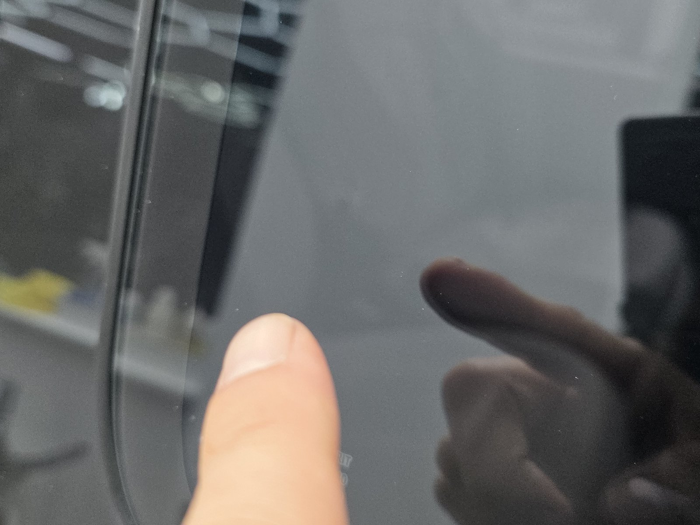
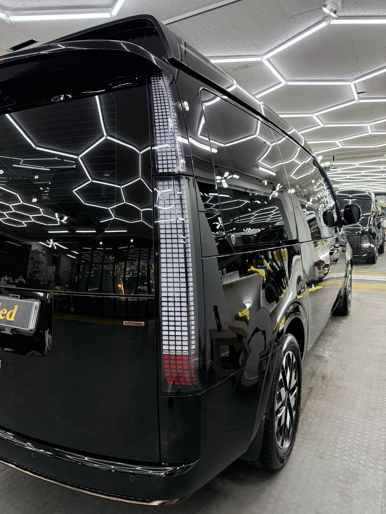
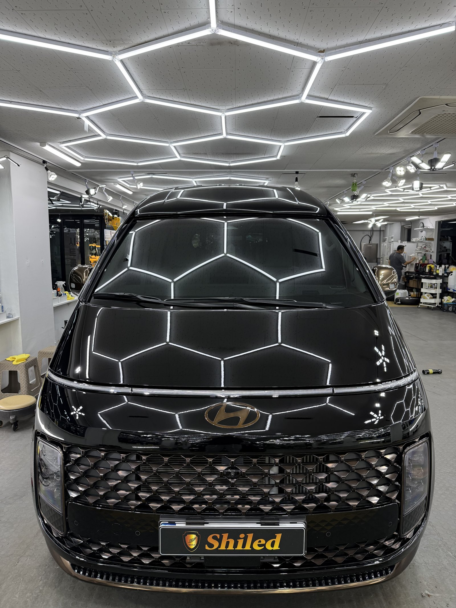
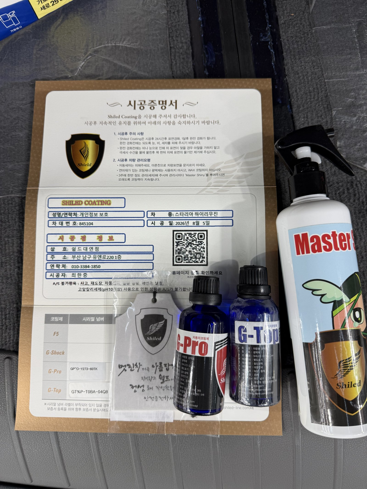

스타리아 하이리무진입니다.
의전·리무진용으로 나온 대형 밴이라 지붕도 길고 도어도 많습니다.
손끝으로 도장면을 훑어보니 사포처럼 까끌거렸습니다. 페인트 날림입니다.

페인트 날림, 부산 광택 현장에서 흔히 보는 손상입니다
도료가 씻겨나가는 오염이 아니라 굳어버린 알갱이이기 때문입니다.
근처에서 도장 작업이나 공사가 있으면 공중에 흩어진 도료가 미세한 방울로 날아옵니다. 그게 차 지붕과 도어, 유리 몰딩 위에 내려앉아 그대로 굳습니다. 물로 씻으면 표면 먼지만 빠지고, 굳은 입자는 그 자리에 그대로 박혀 있습니다.
검정 도장면은 이게 특히 잘 보입니다. 조명 아래서는 하얀 알갱이가 그대로 드러납니다.

작업 전. 도장면 전체에 하얀 알갱이가 촘촘히 박혀 있습니다
유리 몰딩 주변은 상태가 더 심했습니다.
손톱으로 짚어보니 알갱이가 뭉쳐서 굳은 자리도 있었습니다. 세차로는 절대 안 빠지는 상태입니다.

필러 유리 몰딩 주변. 도료가 뭉쳐서 굳은 자리까지 있었습니다
큰 차일수록 부산 광택 작업 시간이 오래 걸리는 이유
스타리아 하이리무진은 일반 세단보다 도장면이 훨씬 넓습니다.
지붕이 길고, 도어 수도 많고, 하이루프 구조라 측면 면적까지 큽니다. 넓다고 힘으로 미는 게 아니라 구역을 나눠서 같은 밀도로 입자를 떼어내야 합니다. 대충 넘기면 특정 부위만 얼룩덜룩하게 남습니다.

측면 전체. 하이루프 구조라 면적이 일반 밴보다도 넓습니다
기술자의 팁
페인트 날림을 확인하는 가장 쉬운 방법은 손끝이나 비닐봉지를 씌운 손으로 도장면을 쓸어보는 것입니다. 눈으로는 먼지처럼 보여도, 손에 걸리면 그건 굳은 도료입니다. 큰 차는 패널이 많은 만큼 부위별로 하나씩 확인해야 놓치지 않습니다.
부산 광택, 페인트 날림은 어떤 순서로 잡나
바로 갈아내면 안 됩니다. 그게 제일 중요합니다.
굳은 입자가 도장면 위에 얹혀 있는 상태에서 패드를 대면, 그 입자가 연마재처럼 도장을 긁고 지나갑니다. 없던 상처를 만드는 셈입니다.
그래서 순서를 지킵니다.
① 디테일링 세차와 철분 제거로 표면 오염부터 걷어냅니다.
② 점토와 전용 약품으로 굳은 도료 입자를 하나씩 떼어냅니다.
③ 광택으로 그 과정에서 남은 미세 자국과 헤이즈를 정리합니다.
이번 스타리아 하이리무진은 지붕과 측면 도어 면적이 넓어서 ②에 시간이 가장 많이 들어갔습니다.
마감은 G-PRO + G-TOP 듀얼코팅으로
입자를 떼어낸 도장면은 그대로 두면 안 됩니다.
표면이 한 번 정리된 상태라 오염이 다시 앉기 쉽습니다. 그래서 G-PRO로 경도를 올리고 그 위에 G-TOP으로 발수·방오를 얹는 듀얼코팅으로 마감했습니다.
G-PRO는 스크래치 내성을 담당하고, G-TOP은 오염이 표면에 붙는 것 자체를 줄여줍니다. 리무진처럼 면적이 넓은 차는 관리 주기를 늘려야 하는 만큼, 이 조합이 맞습니다. 코팅제는 제가 직접 개발·제조한 것으로 시공했습니다.
마감 후, 무엇이 달라졌나
알갱이에 부딪혀 흩어지던 빛이 곧게 맺히기 시작했습니다.
페인트 날림이 있는 도장면은 조명 윤곽이 항상 번져 보입니다. 빛이 입자에 걸려 산란하기 때문입니다. 입자를 걷어내면 같은 조명이 선으로 딱 떨어집니다.

같은 루프, 작업 후. 육각 조명이 흐트러짐 없이 맺힙니다

같은 필러 자리, 작업 후. 손끝에 걸리는 게 없어졌습니다

듀얼코팅 완료 후 측면. 긴 차체 전체에 조명이 왜곡 없이 이어집니다

완성된 정면. 부산 남구 쉴드광택에서 마감했습니다

시공증명서와 관리용 Master Shiny를 함께 드립니다
자주 묻는 질문
Q. 페인트 날림은 세차로 지워지지 않나요?
A. 지워지지 않습니다. 공중에 흩어진 도료가 미세한 방울 상태로 내려앉아 클리어코트 위에서 그대로 굳기 때문입니다. 물과 세제로는 표면 위 오염만 씻겨나가고, 굳어버린 도료 입자는 손끝에 그대로 걸립니다.
Q. 스타리아 하이리무진처럼 큰 차는 작업 시간이 얼마나 더 걸리나요?
A. 일반 세단보다 확실히 오래 걸립니다. 지붕 길이와 측면 도어 수가 많아 손이 닿는 면적 자체가 넓기 때문입니다. 구역을 나눠 같은 밀도로 입자를 떼어내야 얼룩 없이 마감되므로, 빨리 끝내려고 힘으로 미는 방식은 쓰지 않습니다.
Q. 페인트 날림 제거는 어떤 순서로 하나요?
A. 먼저 디테일링 세차와 철분 제거로 표면 오염을 걷어냅니다. 그다음 점토와 전용 약품으로 굳은 도료 입자를 물리적으로 떼어내고, 마지막에 광택으로 그 과정에서 생긴 미세 자국까지 정리합니다. 순서를 건너뛰고 바로 갈아내면 입자가 도장면을 긁고 지나갑니다.
Q. 페인트 날림 제거 후 코팅까지 해야 하나요?
A. 권합니다. 입자를 떼어내는 과정에서 클리어코트 표면이 한 번 정리되기 때문에, 그 상태 그대로 두면 오염이 다시 앉기 쉽습니다. 이번 스타리아 하이리무진은 G-PRO로 경도를 올리고 G-TOP으로 발수·방오를 얹는 듀얼코팅으로 마감했습니다.
Q. 쉴드광택 위치와 예약은 어떻게 하나요?
A. 부산 남구 유엔로220 1F 쉴드광택입니다. 예약·상담은 010-3384-1850, 대표 최한중이 직접 상담하고 책임 시공합니다.
손으로 쓸었을 때 까끌거린다면 그건 먼지가 아닙니다.
제품을 직접 만드는 사람이 직접 작업합니다.
부산에서 페인트 날림 제거와 광택을 고민 중이시면 편하게 연락 주십시오. 큰 차, 리무진, 밴 종류도 그대로 진행 가능합니다.
어떤 차를 타냐보다 어떻게 타냐가 중요합니다~!
시공 중에는 전화를 받지 못할 때가 많습니다.
카카오톡으로 차종과 원하시는 시공을 남겨주시면 확인 후 답변드립니다.
쉴드광택 · 부산 남구 유엔로220 1F · 대표 최한중